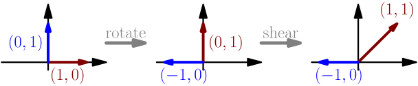
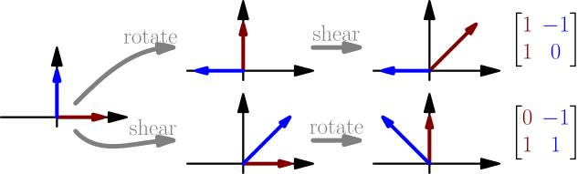

Matrix multiplication¶
If we apply two functions like $f(g(\vec v))$, the resulting function is called the composition of $f$ and $g$. If $f$ and $g$ are linear, the composition is also linear:
- You can compute it separately for each part of a sum: For all vectors $\vec v$ and $\vec w$, we have $g(\vec v+\vec w)=g(\vec v)+g(\vec w)$ because $g$ is linear, and $f(g(\vec v)+g(\vec w))=f(g(\vec v))+f(g(\vec w))$ because $f$ is linear. Putting all that together, we get $$ f(g(\vec v + \vec w)) = f(g(\vec v))+f(g(\vec w)). $$
- You can move numbers to front, because it works with $f$ and with $g$: for any number $a$, we get $f(g(a\vec v))=f(ag(\vec v))=af(g(\vec v))$.
For example, let's say we want to first rotate by 90 degrees ($g$) and then shear ($f$). Rotation and shear are both linear functions, so the resulting "rotate and then shear" function $f(g(\vec v))$ is linear, and it must have a corresponding matrix. To find the matrix, we can rotate and shear the vectors $(1,0)$ and $(0,1)$, and the resulting vectors are the columns of the "rotate and then shear" matrix.
Using the matrices of rotation and shear, with $(1,0)$ we get $$ \underbrace{ \begin{bmatrix} \magenta 1 & \green 1 \\ \magenta 0 & \green 1 \end{bmatrix} }_{\text{shear}} \underbrace{ \begin{bmatrix} \red 0 & \blue{-1} \\ \red 1 & \blue 0 \end{bmatrix} }_{\text{rotation}} \begin{bmatrix}1\\0\end{bmatrix} = \underbrace{ \begin{bmatrix} \magenta 1 & \green 1 \\ \magenta 0 & \green 1 \end{bmatrix} }_{\text{shear}}\red{\begin{bmatrix}0 \\ 1 \end{bmatrix}} = \red 0 \magenta{\begin{bmatrix}1\\0\end{bmatrix}} + \red 1\green{\begin{bmatrix}1\\1\end{bmatrix}} = \begin{bmatrix}1\\1\end{bmatrix}, $$ and with $(0,1)$ we get $$ \underbrace{ \begin{bmatrix} \magenta 1 & \green 1 \\ \magenta 0 & \green 1 \end{bmatrix} }_{\text{shear}} \underbrace{ \begin{bmatrix} \red 0 & \blue{-1} \\ \red 1 & \blue 0 \end{bmatrix} }_{\text{rotation}} \begin{bmatrix}0\\1\end{bmatrix} = \underbrace{ \begin{bmatrix} \magenta 1 & \green 1 \\ \magenta 0 & \green 1 \end{bmatrix} }_{\text{shear}}\blue{\begin{bmatrix}-1 \\ 0 \end{bmatrix}} = \blue{(-1)} \magenta{\begin{bmatrix}1\\0\end{bmatrix}} + \blue{0}\green{\begin{bmatrix}1\\1\end{bmatrix}} = \begin{bmatrix}-1\\0\end{bmatrix}. $$ So the "rotate and then shear" matrix is $$ \begin{bmatrix} 1 & -1 \\ 1 & 0 \end{bmatrix}. $$

From now on, combining two matrices into one like this will be called matrix multiplication.
Matrix multiplication $AB$ produces the matrix that represents first applying $B$ and then $A$.
So for example, $$ \underbrace{ \begin{bmatrix} 1 & 1 \\ 0 & 1 \end{bmatrix} }_{\text{shear}} \underbrace{ \begin{bmatrix} 0 & -1 \\ 1 & 0 \end{bmatrix} }_{\text{rotate}} = \underbrace{\begin{bmatrix} 1 & -1 \\ 1 & 0 \end{bmatrix}}_{\text{rotate and shear}}. $$
Note that the order is reversed, in the sense that the second matrix is applied first. The order really matters: "shear and then rotate" does not produce the same results as "rotate and then shear".

Also note that we don't have to use parentheses when multiplying two matrices $A$ and $B$ with a vector $\vec v$. It doesn't matter whether $AB\vec v$ gets interpreted as $A(B \vec v)$ with two matrix-vector multiplications, or as $(AB)\vec v$ with one matrix-matrix multiplication and one matrix-vector multiplication.
I will later (TODO) explain why matrix-matrix multiplication is called multiplication.
Size problems¶
Not all matrices can be multiplied together. For example, let's try to multiply a $3 \times 3$ matrix with a $2 \times 2$ matrix. To find the left column of the result, we calculate $$ \red{\begin{bmatrix} 1 & 4 & 7 \\ 2 & 5 & 8 \\ 3 & 6 & 9 \end{bmatrix}} \blue{\begin{bmatrix} 1 & 3 \\ 2 & 4 \end{bmatrix}} \begin{bmatrix}1\\0\end{bmatrix} = \red{\begin{bmatrix} 1 & 4 & 7 \\ 2 & 5 & 8 \\ 3 & 6 & 9 \end{bmatrix}} \blue{\begin{bmatrix} 1 \\ 2 \end{bmatrix}} = \blue 1 \red{\begin{bmatrix}1\\2\\3\end{bmatrix}} +\blue 2 \red{\begin{bmatrix}4\\5\\6\end{bmatrix}} +{\blue{???}}\red{\begin{bmatrix}7\\8\\9\end{bmatrix}} $$ The matrix-vector multiplication with a $2 \times 2$ matrix produced a 2D vector as a result, but a matrix-vector multiplication with a $3 \times 3$ matrix needs a 3D vector as input. This just doesn't work.
Recall that the width of a matrix is the dimension of the input vectors and the height is the dimension of output vectors.
The matrix multiplication $AB$ is undefined if the width of $A$ is not same as the height of $B$.
A different way to multiply¶
Let $A$ and $B$ be matrices so that $A$'s width is $B$'s height. For example, if $A$'s width and $B$'s height are both 3, we have something like $$ A = \begin{bmatrix} \red1&\red2&\red3 \\ \magenta4&\magenta5&\magenta6 \\ &\vdots& \end{bmatrix} \quad \text{and} \quad B = \begin{bmatrix} \blue7&\green{10}& \\ \blue8&\green{11} & \cdots \\ \blue9&\green{12}& \end{bmatrix}. $$ Then the first column of $AB$ is $$ AB\begin{bmatrix}1\\0\\0\\ \vdots\end{bmatrix} = \blue7\begin{bmatrix} \red1 \\ \magenta4 \\ \vdots \end{bmatrix} + \blue8\begin{bmatrix} \red2 \\ \magenta5 \\ \vdots \end{bmatrix} + \blue9\begin{bmatrix} \red3 \\ \magenta6 \\ \vdots \end{bmatrix} = \begin{bmatrix} \blue7\cdot\red1+\blue8\cdot\red2+\blue9\cdot\red3 \\ \blue7\cdot\magenta4+\blue8\cdot\magenta5+\blue9\cdot\magenta6 \\ \vdots \end{bmatrix}, $$ and the second column is $$ AB\begin{bmatrix}0\\1\\0\\ \vdots\end{bmatrix} = \green{10}\begin{bmatrix} \red1 \\ \magenta4 \\ \vdots \end{bmatrix} + \green{11}\begin{bmatrix} \red2 \\ \magenta5 \\ \vdots \end{bmatrix} + \green{12}\begin{bmatrix} \red3 \\ \magenta6 \\ \vdots \end{bmatrix} = \begin{bmatrix} \green{10}\cdot\red1+\green{11}\cdot\red2+\green{12}\cdot\red3 \\ \green{10}\cdot\magenta4+\green{11}\cdot\magenta5+\green{12}\cdot\magenta6 \\ \vdots \end{bmatrix}. $$ So $$ AB = \begin{bmatrix} \blue7\cdot\red1+\blue8\cdot\red2+\blue9\cdot\red3 &\quad \green{10}\cdot\red1+\green{11}\cdot\red2+\green{12}\cdot\red3 & \\ \blue7\cdot\magenta4+\blue8\cdot\magenta5+\blue9\cdot\magenta6 &\quad \green{10}\cdot\magenta4+\green{11}\cdot\magenta5+\green{12}\cdot\magenta6 & \cdots \\ & \vdots & \end{bmatrix}. $$ In the top-left corner of $AB$, we have numbers from the top row of $A$ and left column of $B$, multiplied and then added. We can write these as dot products, e.g. $$ \blue7\cdot\red1+\blue8\cdot\red2+\blue9\cdot\red3 = \red{(1,2,3)} \cdot \blue{(7,8,9)}, $$ and we get $$ AB = \begin{bmatrix} \red{(1,2,3)}\cdot\blue{(7,8,9)} &\quad \red{(1,2,3)}\cdot\green{(10,11,12)} & \\ \magenta{(4,5,6)}\cdot\blue{(7,8,9)} &\quad \magenta{(4,5,6)}\cdot\green{(10,11,12)} & \cdots \\ & \vdots & \end{bmatrix}. $$
Each number in $AB$ can be calculated as a dot product of the corresponding row from $A$ and column from $B$.
This is how students usually learn to do matrix multiplication, but I don't like using it as a definition, because it isn't clear why this has anything to do with $f(g(\vec v))$.
Notation ambiguity¶
Consider any matrix-vector multiplication, such as $$ \begin{bmatrix} \red1 & \red2 \\ \magenta3 & \magenta4 \end{bmatrix} \underbrace{ \begin{bmatrix}\blue 5\\ \blue6\end{bmatrix} }_{ ~~~2 \times 1 \\ \text{matrix?} } = \blue5\begin{bmatrix} \red1 \\ \magenta3 \end{bmatrix} + \blue6\begin{bmatrix} \red2 \\ \magenta4 \end{bmatrix} = \begin{bmatrix} \blue5\cdot\red1 + \blue6\cdot\red2 \\ \blue5\cdot\magenta3 + \blue6\cdot\magenta4 \end{bmatrix} = \underbrace{\begin{bmatrix} 17 \\ 39 \end{bmatrix}}_{\text{vector}}. $$ But what if it is actually not a matrix-vector multiplication, but a matrix-matrix multiplication with a matrix that has only one column? If a matrix has only one column, it means that it can be multiplied with one-dimensional vectors, and there's no reason why we couldn't have $n$-dimensional vectors with $n=1$.
Computing the matrix multiplication with dot products (see above) gives $$ \underbrace{ \begin{bmatrix} \red1 & \red2 \\ \magenta3 & \magenta4 \end{bmatrix} \begin{bmatrix}\blue5\\\blue6\end{bmatrix} }_{\text{matrix multiplication}} = \begin{bmatrix}\red{(1,2)} \cdot \blue{(5,6)} \\ \magenta{(3,4)} \cdot \blue{(5,6)}\end{bmatrix} = \begin{bmatrix} \blue5\cdot\red1 + \blue6\cdot\red2 \\ \blue5\cdot\magenta3 + \blue6\cdot\magenta4 \end{bmatrix} = \underbrace{\begin{bmatrix} 17 \\ 39 \end{bmatrix}}_{\text{matrix}}. $$ So matrix-matrix multiplication and matrix-vector multiplication produce the "same" result, where "same" means that even though one is a matrix and the other is a vector, they contain the same numbers.
If you think of vectors as matrices that have only one column, then matrix-vector multiplication is matrix-matrix multiplication.
This is important because when calculating with a computer, matrix-vector multiplications are usually done as matrix-matrix multiplications.